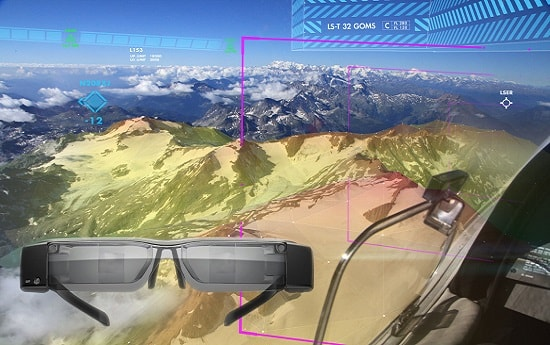
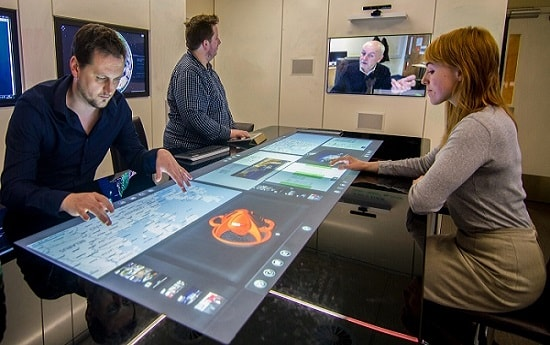
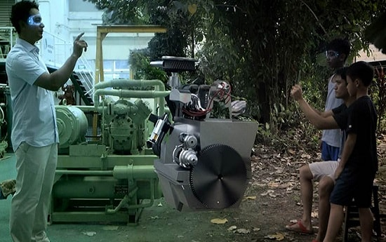
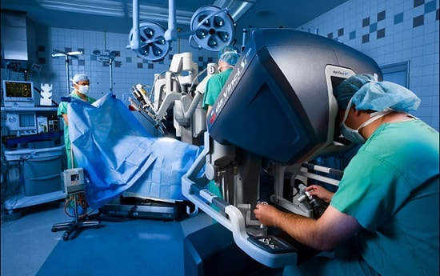

"Mixed Reality will take over VR and AR to be the best virtual environment in near future"
-
 MICROSOFT
MICROSOFT
Definition is cheap, show us
THE APPLICATION
Here we present what Mixed Reality is doing currently...
BOOOMING THE IT SECTOR
AVIATION
Flight Training and Pilot Assistance
The most obvious application of MR to the aviation industry is in training. Flight simulators have been around for years, and are even popular for home use. In the professional space, firms like Boeing have created what are essentially real airplane cockpits, stripped from their vehicles and the windows replaced with movie screens. Although effective as a training tool, these simulators are expensive and bulky.[1] 
Today, several companies are leveraging MR technology to bring simulators into the modern age. Most notable is Bohemia Interactive Simulations, which has been a luminary in both the home and professional flight simulation markets for years. Pairing Oculus Rift head-mounted displays and Leap Motion controllers with D-BOX motion seats and a proprietary landscape rendering engine, the new BIS simulator allows for a stunning virtual experience that accurately mimics every aspect of flight, from the controls to the vistas, and even the rumble of the engine and shaking turbulence.[1]
-
BUSINESS
Mixed Reality Data Organization
Life often imitates art. More specifically, technology often imitates science fiction. The modern Internet was predicted by William Gibson and other cyberpunk writers soon after the advent of the first computer networks. The first cell phones were inspired by the handheld communicators used in Star Trek, with later flip phones even modeled on them aesthetically. One innovation that is often seen in popular media, but not yet delivered in the real world, is the floating user interface. Think about Minority Report, or Tony Stark tinkering away on his Iron Man suit designs. The manipulation of data using natural, instinctive hand motions has obvious efficiency benefits. [2] 
In fact, the science consultant behind Minority Report recently built Mezzanine. This is a dedicated mixed reality room that makes good on those concepts. His firm is pitching it to large corporations as a collaboration solution. For those of us who don’t have access to that kind of space and budget, mixed reality and augmented reality headsets will offer the next best thing. MR could provide an easy way to transport the user entirely into their work, a space filled with data and charts and images to manipulate. AR might be even more practical, integrating hand-written notes, printed documents, and physical objects into the interface.[2] -
EDUCATION
Unimersiv and EON Reality
Previously a repository of reviews of MR educational experiences and tutorials, startup firm Unimersiv has recently launched a mixed reality education app of their own. Available for Oculus Rift and Samsung Gear MR head-mounted displays, the app promises a new educational experience each month. 
At the time of this writing, three experiences are available. Users can virtually travel to Stonehenge, the International Space Station, or inside the human body. Along with the ability to freely look around the environments, the app provides educational content in the form of narration, pop-up text, and images. All three experiences are well-written and developed, and provide a fascinating and very effective new way to learn about the various subject matters.
Another startup, EON Reality is taking a very different approach to the educational space than Nearpod. Where Nearpod focuses on producing and supplying tailored MR experiences to the classroom, EON Reality prefers instead to “teach a man a fish”. They provide the tools for educators to create their own applications. Using the EON Creator, educators can select from a vast selection of 3D models and place them within a virtual environment. Text or interactive elements, including content taken from online sources like Wikipedia, are added using simple scripting and drag-and-drop tools from within the virtual environment. The platform supports a wide array of specialized MR and AR hardware developed and deployed by EON.[3] -
HEALTHCARE
Remote Surgery and Training
In the medical field, “interact” often means “treat” or even “operate.” Surgery is a highly specialized skill, and one of the great tragedies of modern healthcare is the lost lives that could have been saved if only the patient had had access to a better surgeon.

With mixed reality, the greatest surgical specialists can treat patients all over the world, without ever stepping onto a plane. At the Centre for Surgical Invention and Innovation (CSii), Dr. Mehran Anvari became one of the very first surgeons to perform an operation with the use of a remote-controlled robot. Although Dr. Ahvari used a standard computer screen, mixed reality offers the opportunity to make this type of remote surgery even more effective. With the use of a head-mounted display and haptic gloves, a surgeon could virtually transport themselves to an operating room thousands of miles away, able to use their natural skills and senses to save lives. It seems only a matter of time before the best surgeons are able to operate all over the world without ever leaving their hospital.[4]
One firm is leveraging MR to bring healthcare learning to the masses. Startup Medical Realities hosted the first worldwide mixed reality livestream of a surgery earlier this year, and about 50,000 people watched the event on their desktops, phones, and Gear MR head-mounted displays. This level of immersion into an actual surgery, accessible to anyone around the world, was unprecedented. The event was a success, and thankfully so was the operation itself. Medical Realities plans to host many more in months and years to come. Their hope is to allow medical professionals in all walks of life to learn from the best surgeons and doctors by literally looking through their eyes.
- [1] MR in Aviation http://www.realitytechnologies.com/aviation
- [2] MR in Business http://www.realitytechnologies.com/business
- [3] MR in Education http://www.realitytechnologies.com/education
- [4] MR in Healthcare http://www.realitytechnologies.com/healthcare
-
Video Credits - Youtube
https://www.youtube.com/watch?v=0AWhsBNU1jU https://www.youtube.com/watch?v=Uq9h0lZtpSI -
Images and Gif Credits - Google Images
www.google.com/images